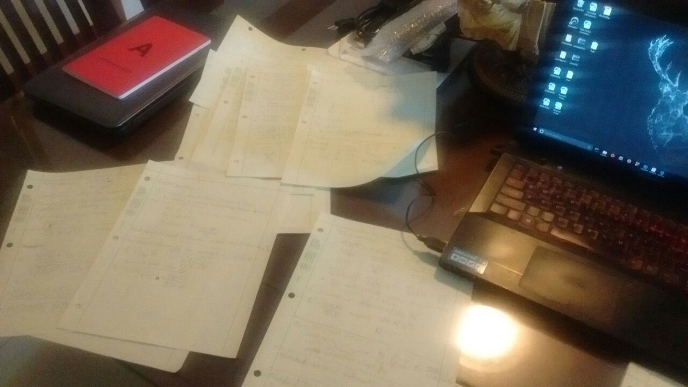
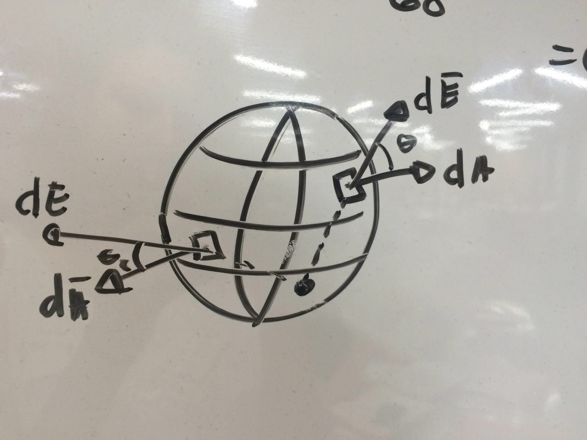
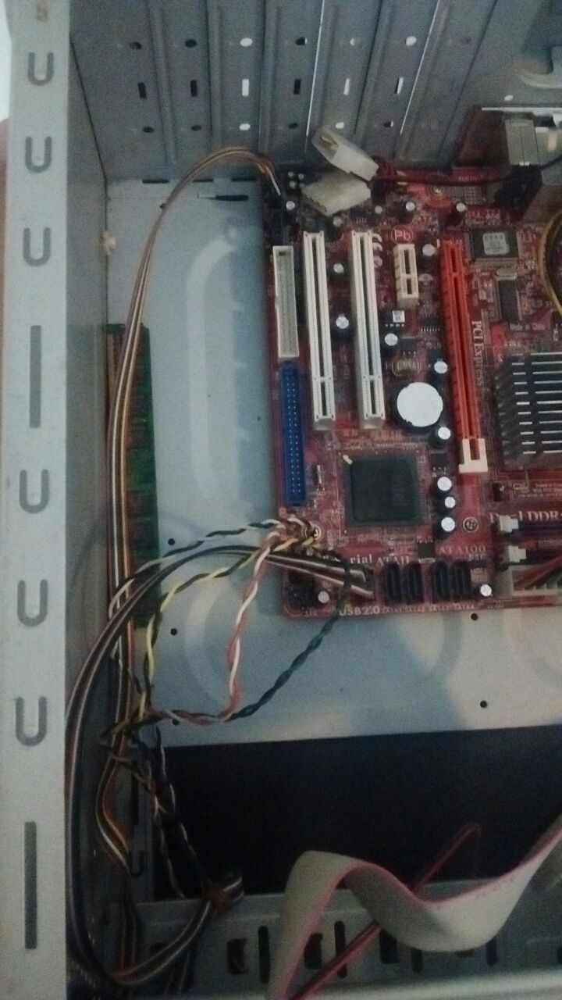
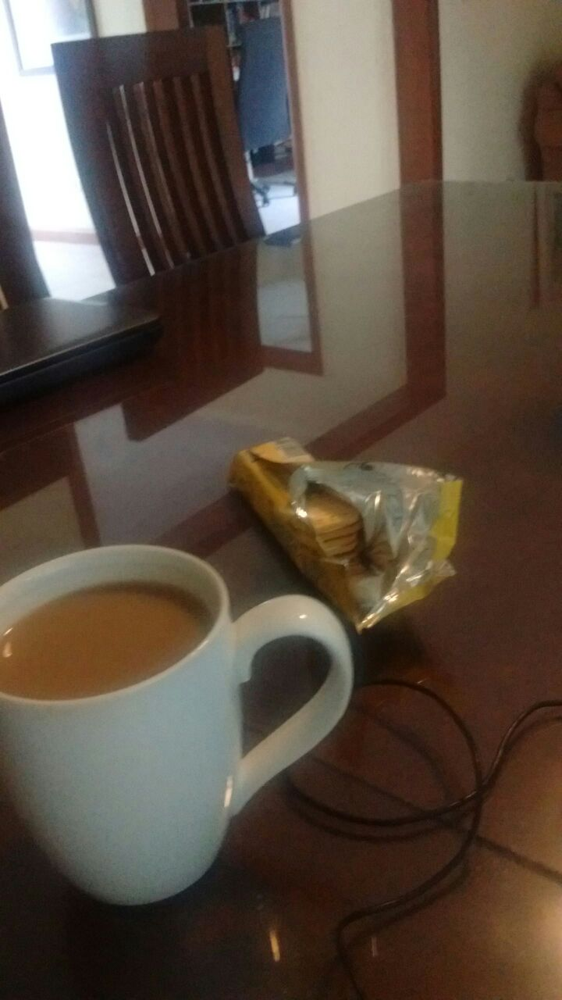
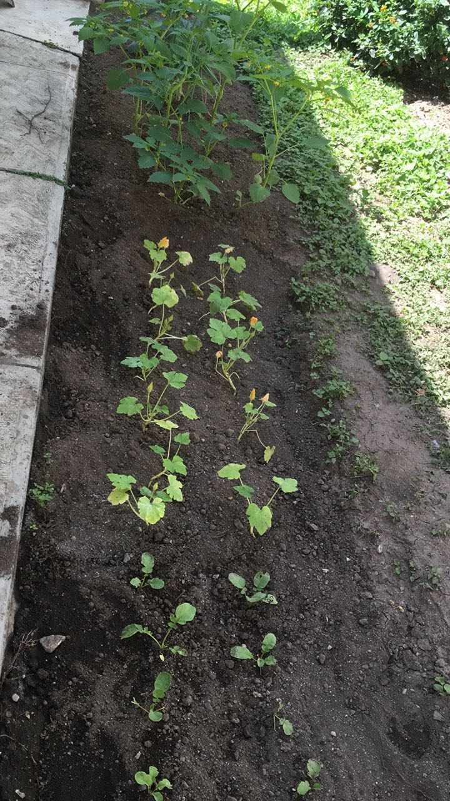
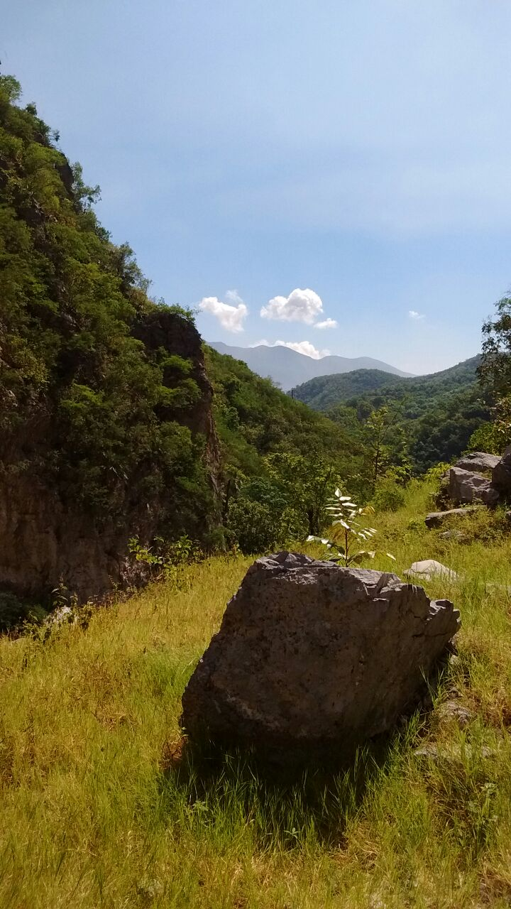
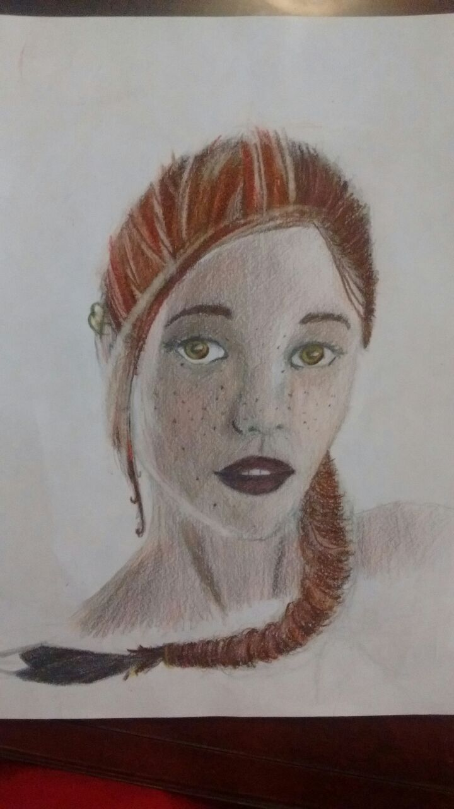
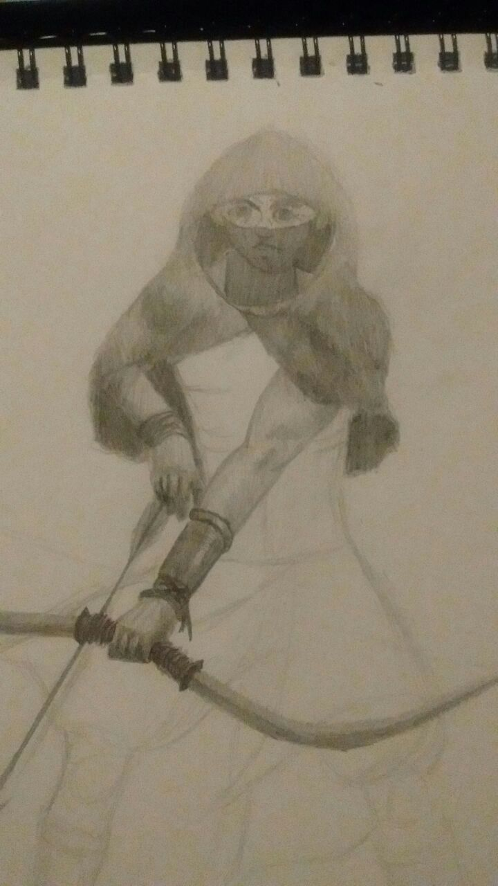
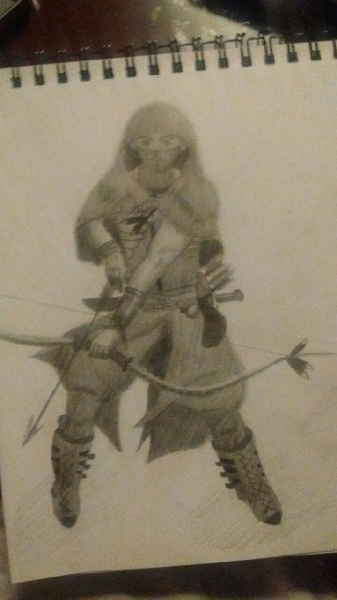

Hello, friend, and welcome to my site. I am Jesus Alatorre, a software engineer in training. Born (9/11/1995) and raised in sunny Monterrey, Mexico, where I currently study. I love coding, coffee, dogs, home-cooked meals, science fiction, gadgetry, and teamwork. I consider myself calm, collected, and generally quiet, but not at all shy.
I believe engineering is all about the observation of the natural world, and using our understanding of it to develop tools for the benefit of humanity. Hence, I believe the computer is the pinnacle of all human engineering, the most advanced tool we possess, and our most powerful ally. To make advances in the field of computation is to push forward the human race itself. I aspire to someday be a part of this driving force, to work among peers that I can learn from and can, in turn, learn from me.
I've done a bunch of mockups. A bunch of them.


None of them are functional apps or online sites, just my beginnings into web development. I've had the opportunity to work with some amazing individuals closely, with whom I've grown a ton and worked on most of these. Luckily, they don't live too far away, so some of our work together can be featured here as part of what I've helped build.
An example of an ongoing project we've got is Virgl (pronounced "Virgil"). It is an app that lets users anonymously report crime by marking its incidence on the map. Slowly but steadily, this'll generate a criminal tendency map on which criminal occurrences can be observed and even color coded.

I also had the opportunity to work on a little browser game for a school project. The concept was simple: an infinite scroller, platform-type game. And it was duck-themed too. We built it with phaser.js, and it was a fun experience all around. This would be my first-ever application of any knowledge of javascript. My particular role in this work was handling the different screens' (like 'Game Over', and 'Start'), getting all the resources to pop in seamlessly, and making sure they would leave when needed.

I am currently coursing my 3rd semester at the Instituto Tecnologico de Monterrey, Campus Monterrey (Monterrey Institute of Technology).
Here, I am studying Ingenieria en Tecnologias Computacionales (Computer Tech. Engineering), a career with a heavy focus on software engineering. Mainly, I use C++ for my classes, and it is thus the language I am most proficient in. You can see my Github repositories on C++ Fundamentals and Object-Oriented C++, these contain several exercises, homeworks, and projects I did, and serve as a clear outline of what I studied throughout those courses. You can also see what I've been up to in my current programming course, C++ Data Structures.
I was taught in American schools for as long as I can remember, so fluent communication in English is second nature to me. I've also always been proficient in the fields of physics and mathematics. One of my favorite subjects ever was Computer Organization, which mixed math and physics to explore the inner workings of the computer. I also got to play with a lot of hardware.
 I believe that a true master is forever a student. We should never limit our growth. Hence, I enjoy going beyond what I'm given in my formal education. I read books, watch video lessons, practice on empty .txt documents and paper.
Currently, I am learning the Python programming language, which I began studying over a year ago. I wish to use it to further my web development skills by supplementing them by learning my way around Flask, the Python framework. I am currently studying this on my own time with the help of books and material online. I hope to have some of these developments under my projects tab in the coming months :).
I began learning web development over a year ago, and can hold my own when working with HTML, CSS, and Javascript. The mockups posted under the projects section were my first ventures into the languages of the web.
Some of my favorite books, which I recommend you read ASAP, are Ada's Algorithm by James Essinger, and The Pattern On The Stone by William Daniel Hillis.
I am a person who enjoys tinkering, taking things apart and putting them back together. I've done this to several PCs that needed parts replaced (and a couple of speakers whose interior magnets I later used in a cute little electrical motor). I have a knack for sneaking coffee into any time of my day. I'm currently growing a bunch of vegetables in a backyard (mainly beets and zucchini) for the fun of it. I adore hiking, and generally being away from the city for some time, particularly if it's on a camping trip.
  I play Dungeons and Dragons whenever I can, and I'm currently the Dungeon Master for a group of 8. I find it to be a very fulfilling experience because of my passion for stories. I love stories - hearing them, telling them, making them. The game lets me tap into this collective storytelling, a group narrative where ideas come to life and become something to explore and build upon. This dynamic allows the group to really let loose, to imagine and chase the possibilities. Being the Dungeon Master means I get to guide the story and become an administrator for all the players, making sure they're moving forward in the plot while adapting it to their own ideas and fantasies. It also means I get to draw a bit, a hobby I come back to every now and then.
  Thanks for taking the time to read a bit about me. You can shoot me an e-mail on just about anything at chuyalatorre@gmail.com. Or send me a message at (+52) 811-737-0000